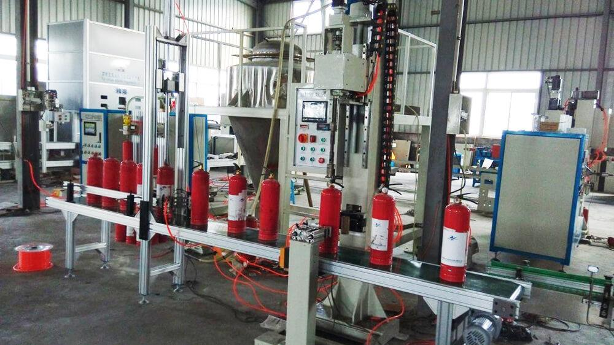

دليل إعادة تعبئة طفايات الحريق المستعملة: الخطوات والمعايير
طفاية الحريق المستعملة ليست نفايات — بل أسطوانة صالحة تحتاج إلى دورة إعادة تعبئة صحيحة لتعود للخدمة بكامل جاهزيتها. في هذا الدليل نشرح خطوة بخطوة كيف تُفرَّغ وتُفحص وتُعبَّأ وتُشحن وفق معايير NFPA 10 و BS 5306، ولماذا تعتبر إعادة التعبئة المعتمدة أساس القيمة التجارية للطفايات المجددة.

لماذا تُعاد التعبئة أصلاً؟
مادة الإطفاء داخل الطفاية ليست دائمة. البودرة الجافة (ABC) تتكتل وتتصلب مع الزمن، خاصة في مناخ الخليج الحار حيث تتجاوز درجات حرارة التخزين 50 درجة مئوية. ثاني أكسيد الكربون يتسرب ببطء عبر الصمامات القديمة. مركزة الرغوة لها عمر افتراضي لا يتجاوز 3 إلى 5 سنوات. لذلك تنص المعايير الدولية — NFPA 10 الأمريكية و BS 5306 البريطانية وأنظلة الدفاع المدني في دول الخليج — على أن الطفاية المخزنة تحت الضغط من نوع البودرة يجب أن تُفرَّغ وتُفحص داخلياً وتُعاد تعبئتها كل 5 سنوات كحد أقصى.
⚠️ مهم: إعادة التعبئة ليست "فتح الطفاية ووضع بودرة جديدة". إنها دورة معتمدة كاملة تبدأ بالتفريغ وتنتهي بختم الضغط. أي تخطٍ لخطوة واحدة يفقد الطفاية صلاحيتها القانونية في تفتيش الدفاع المدني.
الخطوات الثماني لإعادة التعبئة الصحيحة
الخطوة 1: التفريغ الكامل
تُفرَّغ المادة القديمة بالكامل في نظام استرجاع مغلق (وليس في الهواء الطلق). البودرة القابلة للاستخدام يمكن غربلتها وإعادة استخدامها في وحدات التدريب، أما البودرة المتكتلة فتُتلف بطرق آمنة بيئياً.
الخطوة 2: الفحص الداخلي للأسطوانة
باستخدام مصباح فحص داخلي، يفحص الفني جدران الأسطوانة بحثاً عن التآكل والتنقيط والشقوق في لحامات القاع. أي تآكل عميق يعني إخراج الأسطوانة من الخدمة نهائياً — لا يوجد إصلاح لجسم الأسطوانة.
الخطوة 3: اختبار الضغط الهيدروستاتيكي (عند استحقاقه)
تُختبر الأسطوانة بضغط مائي يبلغ ضعف ضغط التشغيل أو أكثر (نحو 27.6 بار لطفايات البودرة، وأعلى بكثير لاسطوانات ثاني أكسيد الكربون). الأسطوانة الناجحة تُختم بتاريخ الاختبار، والفاشلة تُدمَّر فيزيائياً لمنع عودتها للسوق.
الخطوة 4: استبدال الصمام والقطع الاستهلاكية
الصمام هو أكثر جزء يتعب في الطفاية. تُستبدل حلقات الإحكام (O-rings)، وأنبوب السحب، ونابض الصمام كإجراء قياسي. في الوحدات المجددة عالية الجودة يُستبدل الصمام بالكامل بصمام جديد.
الخطوة 5: التعبئة بالمادة الجديدة
توضع بودرة ABC جديدة (عادة فوسفات أمونيوم أحادي بنقاء 90% أو أكثر) بالوزن الدقيق المدون على اللوحة — 4 كغ تعني 4 كغ، دون تقدير بصري. انحراف الوزن أكثر من 5% يُفشل الاختبار.
الخطوة 6: الشحن بغاز النيتروجين
تُشحن الأسطوانة بغاز النيتروجين الجاف حتى الضغط التشغيلي المحدد (عادة 15-18 بار للطفايات المحمولة). النيتروجين — وليس الهواء — هو الغاز الدافع المعتمد لأنه لا يحتوي رطوبة تتلف البودرة.
الخطوة 7: التحقق والتثبيت
يُثبت المانوميتر الجديد، ويُتحقق من قراءته في المنطقة الخضراء، ويُراجع الوزن الكلي مقابل الوزن المدون، ثم يوضع ختم السلامة (Tamper Seal) الجديد على الدبوس.
الخطوة 8: التوثيق
يُلصق سجل الصيانة الحامل لتاريخ التعبئة واسم المنشأة وضغط الشحن. بدون هذا السجل، تُعتبر الطفاية خارج الخدمة في تفتيش الدفاع المدني حتى لو كانت مثالية تقنياً.
جدول دورات إعادة التعبئة حسب النوع
| نوع الطفاية | دورة إعادة التعبئة | ملاحظات |
|---|---|---|
| بودرة جافة ABC (محمولة) | كل 5 سنوات | تفريغ كامل + فحص داخلي + بودرة جديدة |
| بودرة جافة (عجلات 25-50 كغ) | كل 5 سنوات | إعادة التعبئة أوفر بكثير من الشراء الجديد |
| ثاني أكسيد الكربون CO₂ | إعادة شحن بالوزن عند الاستخدام | اختبار ضغط كل 5-10 سنوات |
| الرغوة | استبدال المركز كل 3-5 سنوات | العمر يتقلص في الحرارة العالية |
| الماء (تحت الضغط) | كل 5 سنوات | مع اختبار ضغط كل 6 سنوات |
أخطاء شائعة تُفسد إعادة التعبئة
- خلط البودرة القديمة بالجديدة لتوفير الكلفة — البودرة المتكتلة تلوث الجديدة وتسد الفوهة عند الاستخدام.
- الشحن بالهواء المضغوط بدل النيتروجين — رطوبة الهواء تتلف البودرة خلال أشهر.
- تجاهل اختبار الضغط لأن "الأسطوانة تبدو سليمة" — التآكل الداخلي لا يُرى بالعين.
- إعادة تعبئة طفاية انتهت حياتها التصميمية (25 سنة للبودرة، 30 لثاني أكسيد الكربون) — يجب إخراجها من الخدمة نهائياً.
- عدم استبدال الصمام في الوحدات المجددة — الصمام القديم هو السبب الأول لتسرب الضغط بعد إعادة التعبئة.
ما علاقة هذا بالمستورد في الخليج؟
إذا كنت تشتري طفايات مستعملة أو مجددة من الصين، فأنت تشتري عملياً نتيجة دورة إعادة التعبئة. الفرق بين صفقة ممتازة وصفقة خاسرة هو إجابة هذه الأسئلة:
- هل أعيدت التعبئة بمادة جديدة كاملة أم بمزيج قديم؟
- هل اجتازت الأسطوانة اختبار ضغط موثقاً خلال آخر 12 شهراً؟
- هل استُبدل الصمام أم أعيد استخدامه؟
- هل خرجت الوحدة بسجل صيانة وختم سلامة؟
عند FireGuard Trading تخرج كل وحدة مجددة من ورشتنا وقد: اختُبرت ضغطياً خلال آخر 12 شهراً، ورُكِّب فيها صمام جديد، وعُبئت ببودرة ABC جديدة، وشُحنت بالنيتروجين حتى الضغط المحدد، ووُثقت بسجل صيانة كامل — أي تصل إليك بداية نافذة خدمة جديدة مدتها 5 سنوات.
الأسئلة الشائعة
هل يمكن إعادة تعبئة طفاية الحريق المستعملة بأمان؟
نعم، بشرط أن تتم العملية في منشأة معتمدة تشمل التفريغ الكامل والفحص الداخلي واختبار الضغط عند استحقاقه واستبدال الصمام والحلقات والتعبئة بمادة جديدة مطابقة للمواصفة. إعادة التعبئة غير المعتمدة تُعرض الحياة والملكية للخطر وتُفشل تفتيش الدفاع المدني.
كم مرة تُعاد تعبئة طفاية البودرة الجافة؟
وفق NFPA 10 و BS 5306، تُفحص طفايات البودرة داخلياً وتُعاد تعبئتها كل 5 سنوات كحد أقصى، لأن البودرة تتكتل مع الوقت خاصة في المناخ الحار. اسطوانات ثاني أكسيد الكربون تُختبر كل 5 إلى 10 سنوات.
ما هي خطوات إعادة التعبئة الصحيحة؟
التفريغ الكامل، ثم الفحص الداخلي، ثم اختبار الضغط عند استحقاقه، ثم استبدال الصمام والحلقات، ثم التعبئة بمادة جديدة بالوزن المحدد، ثم الشحن بالنيتروجين، ثم التحقق من المانوميتر والختم، وأخيراً التوثيق بسجل صيانة.
هل إعادة التعبئة أرخص من شراء طفاية جديدة؟
للطفايات الصغيرة قد تكون الجديدة أرخص من كلفة العمالة والمواد. لكن للطفايات الكبيرة والعجلات المتنقلة وثاني أكسيد الكربون، تكون إعادة التعبئة أو شراء وحدة مجددة أرخص بنسبة 40-60% من الجديدة.
كيف أعرف أن الوحدة المجددة معبأة بشكل صحيح؟
ابحث عن مانوميتر في المنطقة الخضراء، ختم سلامة جديد، وزن مطابق للمدون، تاريخ اختبار ضغط مختوم على الأسطوانة، وشهادة إعادة تعبئة من منشأة معتمدة.
اطلب طفايات مجددة معبأة وموثقة
نوفر طفايات مستعملة ومجددة جاهزة للتصدير — بودرة ABC وثاني أكسيد الكربون بجميع الأحجام — كل وحدة مختومة الاختبار ومعبأة بمادة جديدة وموثقة بسجل صيانة. اسألنا عن برنامج تبادل الأسطوانات للكميات الكبيرة.